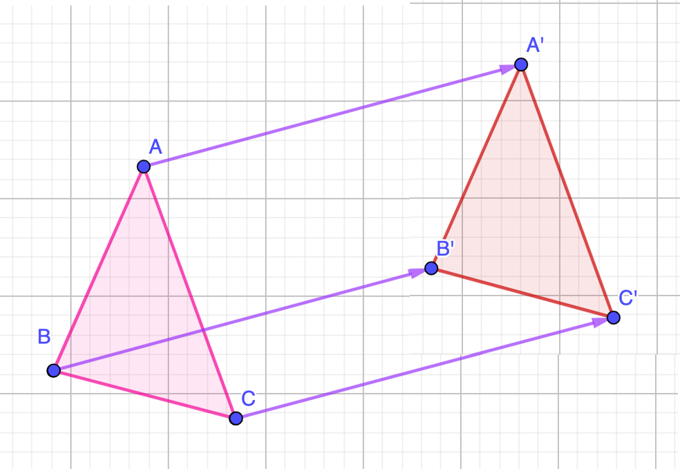
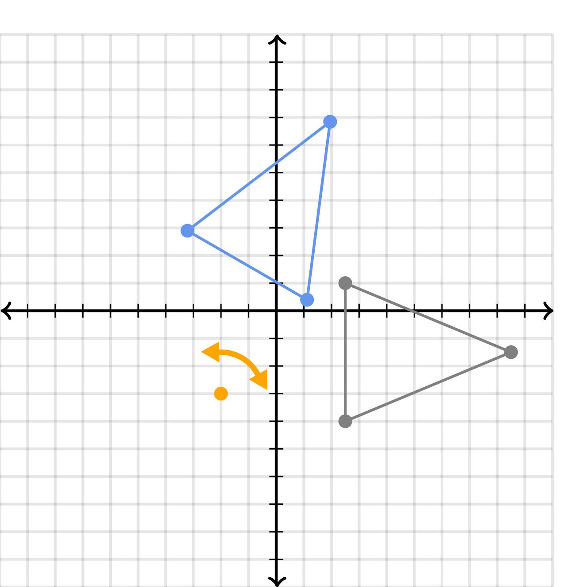
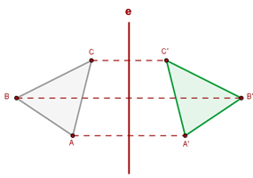
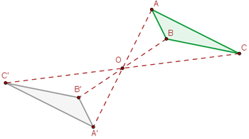
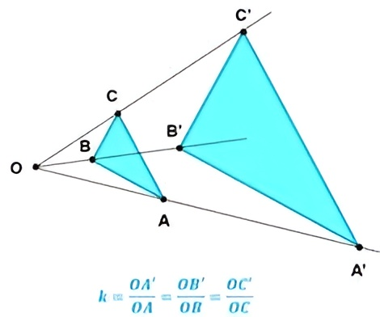

Las transformaciones geométricas son cambios que se aplican a una figura en el plano o en el espacio,
para modificar su posición, orientación, tamaño o forma, sin perder su estructura básica.
O sea, la figura original se convierte en otra mediante movimientos o ajustes especificos.
Se dividen en tres grandes clases según cómo afectan la forma del objeto original:
Isométricas
Son transformaciones donde la figura resultante conserva exactamente el mismo
tamaño, los mismos ángulos y la misma forma que la figura original.
Solo cambia su posición u orientación.
Isomórficas
En estas transformaciones, la figura resultante conserva la forma exacta
de la figura original y los ángulos son iguales, pero el tamaño cambia.
Anamórficas
Son transformaciones más complejas donde la figura resultante sufre una
alteración total, perdiendo la forma original. En este tipo se
modifican tanto las proporciones como los ángulos y el tamaño.
Existen diversos tipos de transformaciones:
La traslación geométrica es un movimiento que consiste en desplazar una figura
de un lugar a otro sin cambiar su forma, tamaño ni orientación.
Es decir, todos los puntos de la figura se mueven

la misma distancia y en la misma dirección.
La rotación geométrica es un movimiento en el que una figura gira
alrededor de un punto fijo llamado centro de rotación.

Durante este giro, la figura mantiene su forma| Ángulo | 90° -270° |
180° -180° |
270° -90° |
|---|---|---|---|
| Punto | (-y, x) | (-x, -y) | (y, -x) |
La simetría axial es una transformación geométrica

en la que una figura se refleja respecto a una línea| Respecto al eje x | Respecto al eje y | Respecto a la recta y = x |
Respecto a la recta y = -x |
| (x, -y) | (-x, y) | (y, x) | (-y, -x) |

También tenemos la simetría central, que ocurre cuando
La homotecia es una transformación geométrica que cambia el tamaño de una figura,
aumentándola (|k| > 1) o reduciéndola (|k| < 1), pero conservando su forma.

Esto se realiza tomando como referencia un punto fijo llamado centro de homotecia.
Las transformaciones geométricas tienen diversas utilidades en cosas cotidianas, como lo pueden ser:
1. En la arquitectura y la ingeniería, para diseñar planos, estructuras y modelos con precisión.
2. En la informática, los videojuegos y la animación, permiten mover, girar, ampliar o reflejar personajes y objetos digitales.
3. En la cartografía y el diseño gráfico, para modificar mapas, imágenes y logotipos
manteniendo proporciones y simetrías.